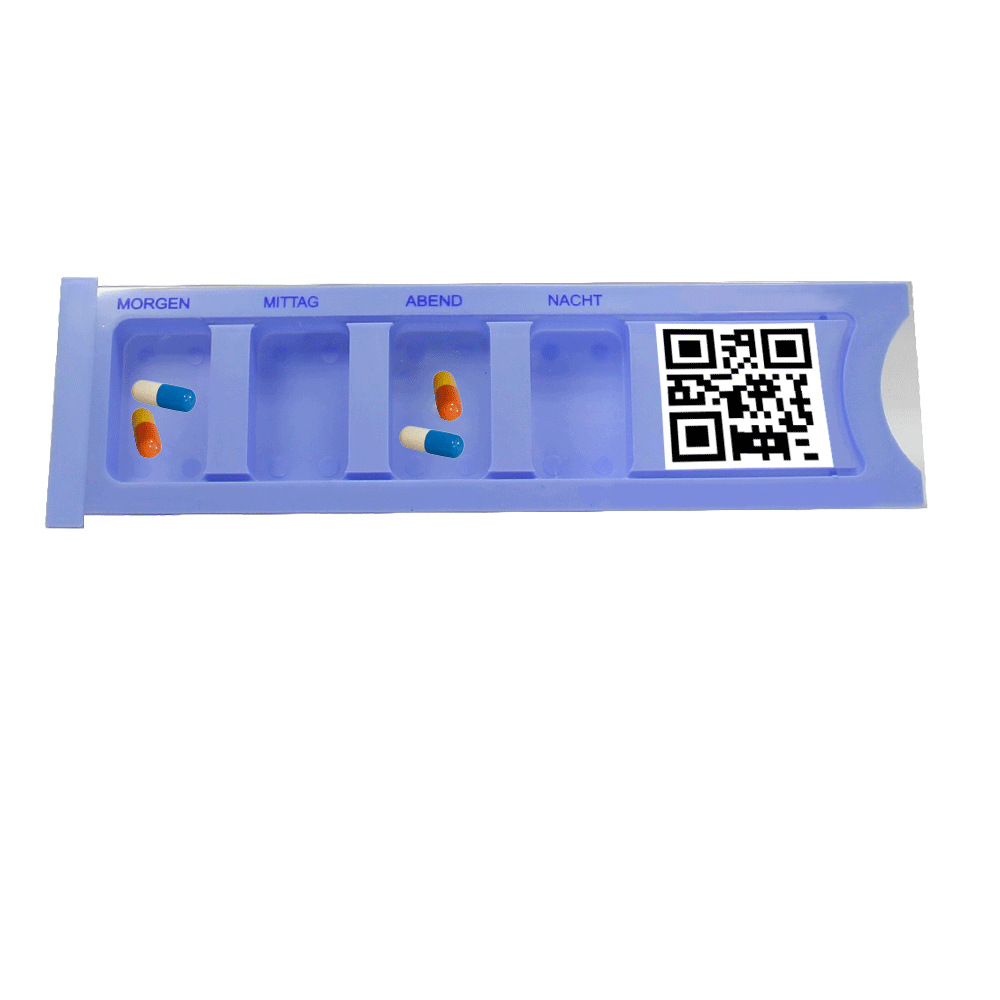
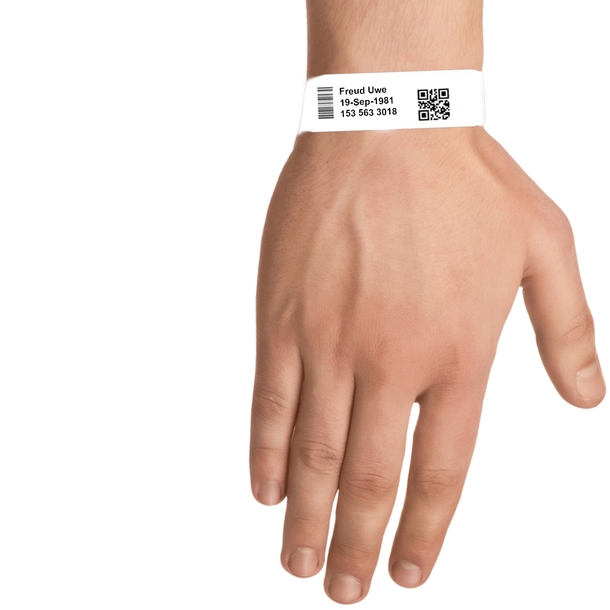

|
Medikamentengabe 1. Dispenser scannen Wählen Sie im Hauptmenü die Funktion "Medikamentengabe" aus. Scannen Sie den Code, der auf dem bestückten Dispenser angebracht ist, mit der Hauptkamera des Smartphones. Im unteren Bereich des Bildschirms wird Ihnen nun der Patient angezeigt, für den der Dispenser bestückt wurde. Wenn Sie beim Scannen des Dispensers eine Fehlermeldung erhalten so wurde: 1. Möglichkeit: Die Medikation geändert und stimmt nicht mehr mit der überein, die dem Dispenser vorliegt. 2. Möglichkeit: Es handelt sich um einen falsch angebrachten Code auf dem Dispenser.  |
|
2. Patient scannen Scannen Sie den Code auf dem Patientenarmband des Patienten, der die Medikation erhalten soll und bestätigen Sie anschließend die Gabe. Sie können nun entweder mit der Medikamentengabe fortfahren oder diese beenden.  |